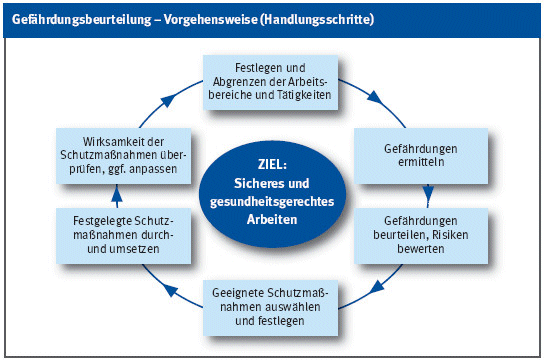

"Rangfolge" der Schutzmaßnahmen Technische Schutzmaßnahmen haben Vorrang. Suchen Sie zunächst nach sicherheitstechnischen Lösungen. Organisatorische Schutzmaßnahmen (zum Beispiel Koordination der Arbeiten) und verhaltensorientierte Maßnahmen sind immer mit zu berücksichtigen. Persönliche Schutzmaßnahmen (zum Beispiel Tragen von Atemschutz) sollten nur dann gewählt werden, wenn alle anderen Möglichkeiten keine Lösung bieten. Aber Vorsicht: Die Rangfolge ist nur eine grobe Orientierung. Mängel werden wirksam behoben, wenn die Technik sicher ist, die Organisation und das Verhalten der Besch‰ftigten auf sicheres und qualitätsbewusstes Arbeiten orientiert sind.